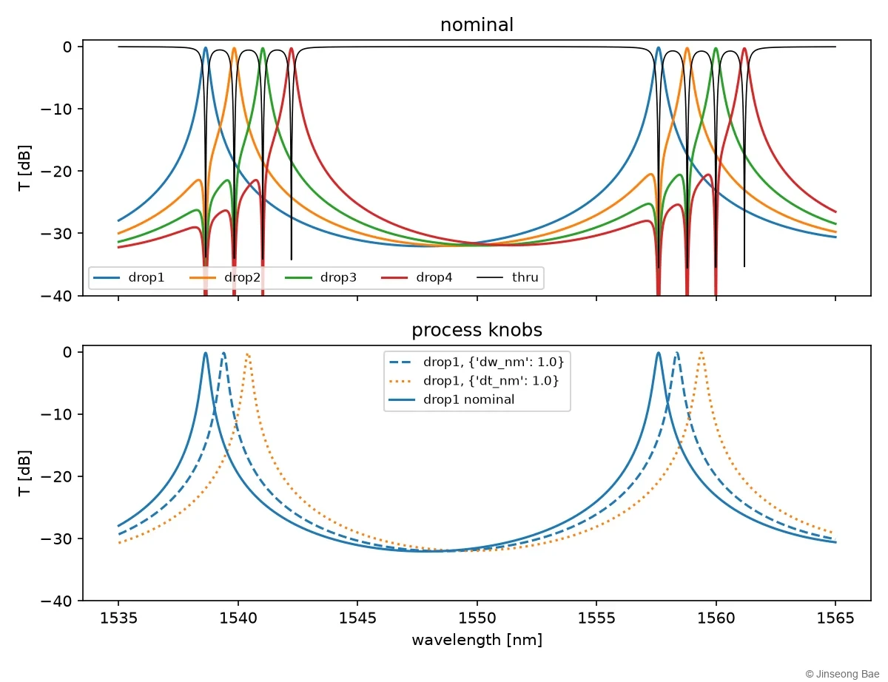
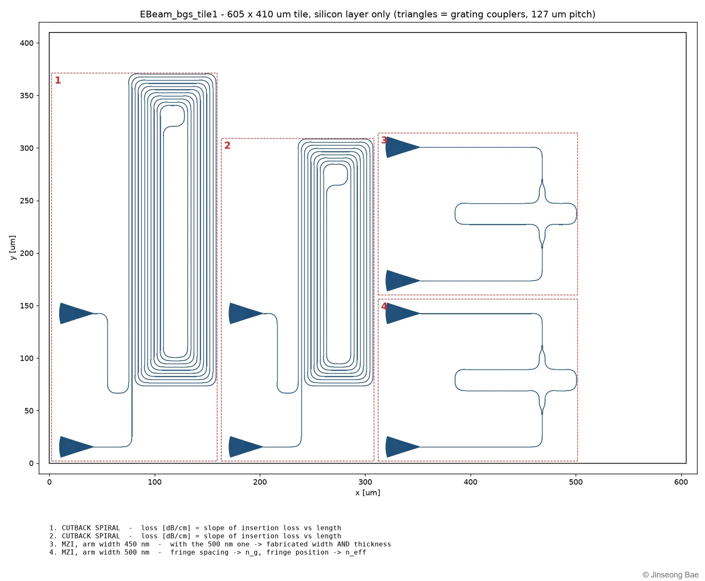
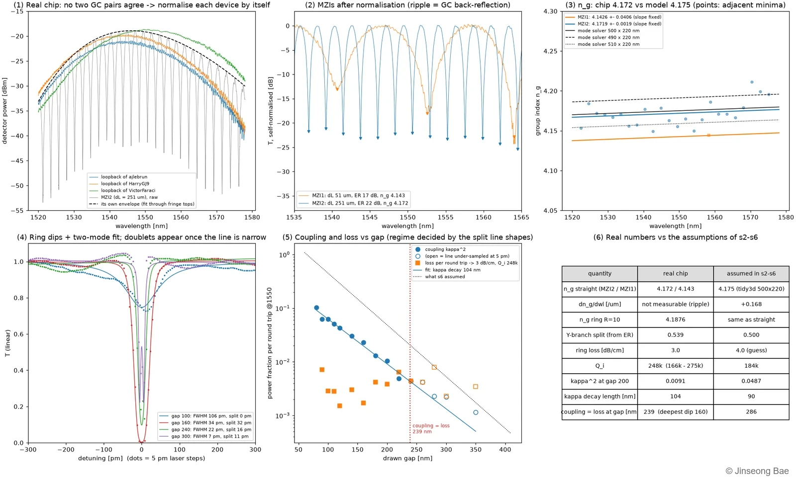
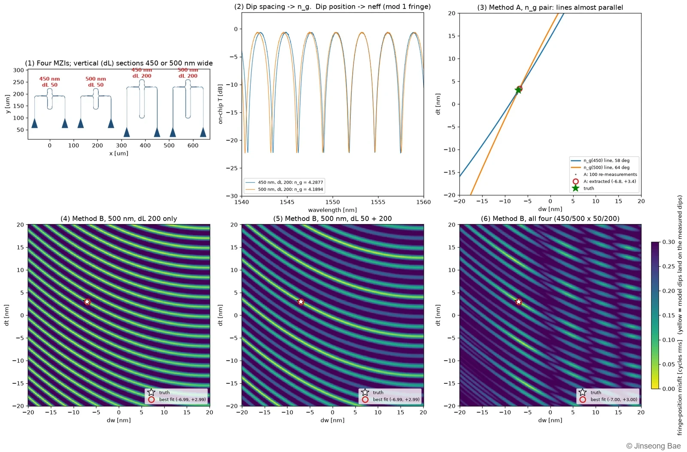

문제와 동기
링 공진기의 공진 파장은 도파로 폭과 실리콘 두께가 1 nm만 달라도 nm 단위로 움직입니다. 그래서 "설계대로 그렸는가"보다 웨이퍼 위 몇 %의 다이가 동작하고, 히터로 맞추는 데 전력이 얼마나 드는가가 공정 관점의 질문입니다. 실리콘 포토닉스 공정 직무를 목표로, 이 질문을 설계 첫 단계부터 끝까지 한 번 따라가 봤습니다.
모델 설정
| 도파로 | 500 × 220 nm Si strip, SiO₂ 상하 클래딩, TE0, λ 1550 nm |
|---|---|
| 굴절률 | Sellmeier: Si 3.4777, SiO₂ 1.4440 (1550 nm). 열광학 계수 1.86e-4 / 1.0e-5 K⁻¹ |
| 모드 해석 | MPB, 3 × 3 µm 창, 64·96 px/µm. 폭 480–520 nm, 두께 210–230 nm, 파장 1530–1570 nm, ΔT 10 K 스윕 |
| 회로 | SAX: 직선·Euler 굽힘·링 결합기(Meep 2D 결과)·3 dB 결합기·탭. 도파로 손실 2.0 dB/cm 가정 |
| 공정 편차 | 두께 σ_t 0.5–5 nm, 폭 σ_w 2 nm. 웨이퍼 간 30 %, 방사형 30 %, 상관 성분(상관 길이 30 mm) 30 %, 다이별 무작위 10 %. 다이 안 링 간 차이 0.3 / 0.1 nm |
| 표본 | 200 mm 웨이퍼 × 400장, 10 mm 다이 276개씩 ≈ 11만 다이 |
| 히터 | 4 mW/nm, 링당 상한 30 mW, 적색 편이만 가능, 채널 간격 0.90 nm |

파이프라인
- 민감도MPB로 n_eff·n_g와 폭·두께·온도 민감도를 구합니다. 두께가 폭보다 2.3배 민감합니다.
- 회로gdsfactory 레이아웃에서 넷리스트를 뽑아 SAX로 MZI와 4채널 링 add-drop 뱅크를 풉니다. drop 손실 0.2–0.3 dB, 누화 −18 / −28 dB.
- 타일과 DRCubcpdk로 605 × 410 µm 타일을 만들고 공정 모니터(cutback 3종, 폭 쌍 MZI, 기준 링)를 넣습니다. DRC는 최소 폭·간격 60 nm, 플로어플랜 경계, 측정 라벨, GC 127 µm 피치를 검사합니다.
- 웨이퍼 몬테카를로다이마다 (dw, dt)를 뽑아 링 공진을 계산하고, 히터로 채널에 맞출 수 있는지와 전력을 셉니다.
- 링크 예산레이저부터 수신기까지 손실을 쌓고 pJ/bit을 나눕니다.




수율 — 채널 배정이 바꾸는 것
두께 편차 σ_t 1 / 2 / 3 nm에서 링 i를 채널 i에 고정하면(설계 A) 수율이 92.4 / 74.8 / 59.9 %로 떨어집니다. 히터가 적색으로만 움직일 수 있어서, 너무 길게 밀린 링은 30 mW 안에 자기 채널에 닿지 못하기 때문입니다.
링이 어느 채널을 맡을지 순환해서 바꾸는 배정만으로는(설계 B) 수율이 같았습니다. FSR을 채널 간격의 4배로 맞추고 순환 배정을 함께 쓰자(설계 C) 수율이 100 %가 됐습니다. 어떤 링이든 한 FSR 안에서 다음 채널을 잡을 수 있게 되기 때문입니다. 이때 링당 평균 히터 전력은 8.1–8.2 mW, 95 백분위 14.7 mW입니다.

92 %는 첫 실행(문헌 기반 민감도) 값이고, MPB 민감도로 다시 돌리면 94.1 %입니다. 분포의 비율과 σ 값은 가정입니다.
링크 예산
4파장 × 50 Gb/s NRZ, 링 변조기(소광비 5 dB, 삽입 손실 4 dB), 수신 감도 −9 dBm OMA, 마진 3 dB, 레이저 효율 12 %를 가정했습니다. 총 손실 13.9 dB를 메우려면 파장당 레이저 7.9 dBm(6.2 mW)이 필요하고, 에너지는 3.17 pJ/bit(설계 A), 그중 히터가 0.59 pJ/bit(19 %)입니다. 설계 C는 2.90 pJ/bit입니다.

실측 점검 — openEBL 공개 데이터
직접 칩을 만들지는 않았지만, SiEPIC openEBL 2025-05 런에서 공개된 측정 데이터(L. Chrostowski 외, MZI 2종과 R = 10 µm 링 gap 17종, 5 pm 간격)를 받아 제 모델과 맞춰 봤습니다. 소자마다 자기 포락선으로 정규화하고, 분산은 모델 값으로 고정했으며, 갈라진 공진(doublet)은 2-모드로 피팅했습니다.


| MZI n_g | 4.172 ± 0.002 (ΔL 251 µm, 골 25개). 방법을 바꾸면 ±0.01. 모드 솔버 값 4.175 |
|---|---|
| 링 Q_i | 247,785 (범위 170k–270k), 손실 2.98 dB/cm |
| 결합 | gap 200 nm에서 κ² 실측 0.009 — 가정 0.049는 약 5배 과대. κ² 감쇠 길이 104 nm, 임계 결합 gap 약 239 nm |
| 손실 | 가정(Q_i 18.4만, 4 dB/cm)은 실측보다 오히려 비관적 |
| Y-branch | 분배비 0.54 : 0.46 |
그 전에 정답을 아는 가상 칩으로 추출 절차를 채점했습니다. n_g 4.1857 vs 정답 4.1856, (dw, dt) = (−7.00, +3.00) nm 복원, Q_i 184,800 vs 184,400.


한계와 주장하지 않는 것
주장하는 것
- 모드 해석부터 수율·링크 에너지까지 한 흐름으로 계산했다
- 공개 실측으로 결합 가정이 약 5배 과대였음을 확인하고 고쳤다
주장하지 않는 것
- 칩을 제작·측정하지 않았다 — 실측은 다른 사람의 칩이다
- 실측으로 (dw, dt)를 nm 단위로 말할 수 없다 (방법 오차 ±0.01 n_g)
- SAX 링은 2D Meep 기반이라 FSR·민감도가 과대, 열 누화·PAM4·변조기 편차는 빠짐
- 타일 2는 DRC 간격 위반이 남아 있고, openEBL에 제출하지 않았다
코드 구성
mode/mpb_strip.py,mode/analyze.py— 모드 해석과 민감도run_01_mzi.py,run_02_filter_bank.py— SAX 회로tapeout/die.py,tapeout/drc.py— 타일 레이아웃과 DRCmc/wafer_mc.py— 웨이퍼 몬테카를로 (--validate로 SAX 대조, 최대 오차 0.002 nm)link/link_budget.py— 링크 예산basic/s1–s7_*.py— 가상 칩 채점과 openEBL 실측 분석
2026년 9월 19–20일 작업입니다. 실측 데이터 출처: SiEPIC/openEBL-2025-05.